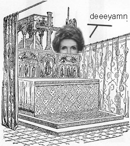

| SHI |
|
There's a necrophiliac and SHE's peering at you, looking from behind the coffin.

|
| 無視 する |
to ignore or snub someone or something.
★★★☆☆
|
| 視界 |
field of view
☆☆☆☆☆
one's field of view; like insects can see 360 degrees and etc. |
| Meaning | Hint | Radical | |
|---|---|---|---|
| 規 | criteria | HUSBAND | 夫 |
| 視 | peer at | NECROPHILIAC | ネ |
| 現 | reality | KING | 王 |
You think about your criteria for choosing a HUSBAND.
You peer at the NECROPHILIAC, is he the one for you?
The KING is present, and waiting for you to choose him.
|
guard
警備 監視 見張り |
|
hallucination
幻覚 幻 幻想 幻視 |
|
patrol
巡回 巡視 |
 KANJIDAMAGE
KANJIDAMAGE